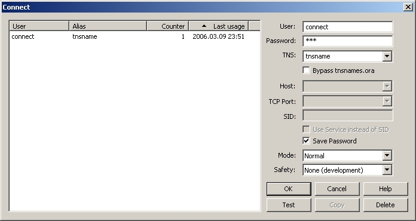

In order to connect to a database, SQLTools gives the following window :

In the right, you will find all you need to configure the connexion:
User / Password: Specify the user / password for
Oracle account.
TNS : Specifies the TNS alias from TNSNAMES.ORA.
Host / TCP Port / SID : Specify an instance location
when
Direct Connection box is checked.
Save Password : Allows to store passwords for all saved
connection. Password is stored in Windows registry without encryption so
it's up to you to use it or not.
You may use an OCI connexion (username, password and TNS name) or a Thin
connexion (username, password, Hostname, TCP port and database SID). Then,
you may change the mode of the connexion : Normal, SYSDBA or SYSOPER.
In the left, there is the
connection list
You can choose a connection which you already used. SQLTools indeed
preserves the history of last connections.
Test : Click this button to test connection with the
specified connection attributes.
Copy : Click this button to format TNS alias string
from Host, TCP Port and SID and copy it to Clipboard. Available only for
Direct Connection.
Delete : Click this button to delete the current
connection from Connection List.
Ok : Click this button to open a connection and close
the dialog box. All connection attributes will be automatically saved.
Cancel : Click this button to close the dialog box..
Help : Click this button to show this help.